AI 每日新聞彙整
全部主題
其他
4 家媒體報導veranvidiarubin
With Groq 3 LPX in Full Production, NVIDIA Extends Vera Rubin Inference for Agents
The next era of AI inference won’t be defined by a single breakthrough chip, network or system. It’ll be defined by how every layer of the AI factory works together. That’s why NVIDIA is extending Vera Rubin NVL72 with fast token generation for agentic systems. Announced today, t
- DIGITIMES NVIDIA漲價15%牽動AI供應鏈 晶片界：推論ASIC吸引力或攀升
- DIGITIMES 供應鏈苦惱NVIDIA Vera Rubin青黃不接 ASIC、通用伺服器神救援
- TechOrange 科技報橘 【科技早餐】NVIDIA 財報季收估 920 億美元、AI 伺服器傳漲逾 15%；中國包辦全球人形機器人前五大
- NVIDIA Blog With Groq 3 LPX in Full Production, NVIDIA Extends Vera Rubin Inference for Agents
- NVIDIA Blog Up to 30x More Work Per Watt: NVIDIA Vera Rubin NVL72 Sets a New Efficiency Standard for AI Agents
- INSIDE AI 代理改變的不只 GPU！NVIDIA 如何用 Vera Rubin 重塑整座 AI 工廠？
3 家媒體報導huggingfaceopensource
Hugging Face reportedly in talks to be acquired for $13B
Hugging Face has reportedly been fielding acquisition offers that would value the company at around $13B. But with the founders' feeling of responsibility to community, doubts arise as to whether a sale will happen.

2 家媒體報導100xiaomicompute
小米集团副总裁朱丹：芯片研发投入是为下一个十年买“入场券”
IT之家 8 月 24 日消息，小米今天（24 日）发布了三款自研芯片，随后在当天晚间登上央视财经频道。小米集团副总裁朱丹在采访中介绍，小米的判断很明确，AI 时代算力是一切智能体验的根基，不掌握芯片能力，就无法从底层定义产品体验。所以这笔投入不是“烧钱”，是在 为下一个十年买“入场券” 。 报道援引业内人士的分析称，国内多家企业持续加码芯片自研，通过长期高额的技术投入，完善全场景算力布局，是产业链自主可控、产业高质量发展的重要趋势。 综合IT之家此前报道，小米新一代玄戒芯片今天实现“三芯齐发”。 玄戒 O3，AI 旗舰 SoC，安兔兔首破 500 万
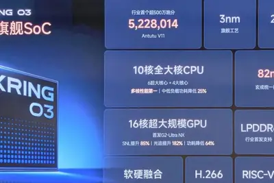
- DIGITIMES 小米一口氣發表3款玄戒晶片 布局手機SoC、AI與智慧駕駛
- IT之家 小米集团副总裁朱丹：芯片研发投入是为下一个十年买“入场券”
2 家媒體報導anthropicclaudecode
llm-anthropic 0.27
Release: llm-anthropic 0.27 This release of the Anthropic plugin for LLM mainly provides compatibility with the recently released anthropic v1.0.0 Python library, which switches from httpx to httpx2 . OpenAI made the same change in their v3.0.0 release two weeks ago. Anthropic pr
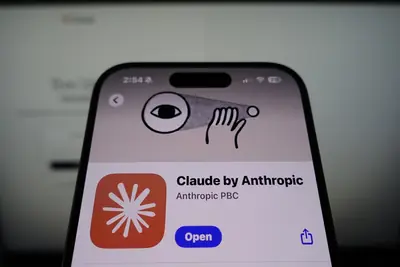
- Simon Willison llm-anthropic 0.27
- 科技新報 TechNews Claude.ai、Claude Code 等故障，Anthropic 確認模型問題著手修復
2 家媒體報導mythosanthropicfable
Anthropic釋出Mythos 5資安能力，企業版可直接掃碼修漏洞
Anthropic於周五（8/21）宣布，將旗下最強模型Claude Mythos 5的資安防禦能力擴大提供給企業客戶與資安夥伴，同時宣布成立Defender Advantage Fund（0xDAF），提供價值3500萬美元的Claude使用額度支援開源資安工作，並預告將放寬資安團隊的模型使用限制。
- iThome Anthropic釋出Mythos 5資安能力，企業版可直接掃碼修漏洞
- TechOrange 科技報橘 Anthropic 最強模型只占 11% 客戶模型支出，Fable 5 暴露 AI「能力溢價」難題
spacexxaidatacenter
马斯克：SpaceX 计划明年第四季度发射搭载英伟达芯片的 AI 卫星
IT之家 8 月 25 日消息，当地时间 8 月 24 日，马斯克在社交平台表示，SpaceX 首批搭载英伟达芯片的 AI 卫星将于明年第四季度首次发射，并于 2028 年实现大规模部署。 马斯克称，SpaceX 与英伟达合作，设计了一套针对太空环境优化的 Vera Rubin NVL72 系统。他表示，每个基于卫星的轨道数据中心都会比传统计算机机架更加简单、便宜、高密度且轻量化。 IT之家注意到，这一加速后的时间表显示，SpaceX 正在以相当快的速度推动轨道数据中心项目从一个充满未来感的概念，逐渐变成公司的核心业务之一。如果项目取得成功，不仅可能为英
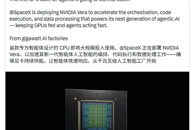
sk-hynixcpo2030
NVIDIA與SK海力士CPO不同？ 3D整合光學中心架構估落在2030後
SK海力士（SK Hynix）全球研究團隊於8月20日在《Nature Electronics》期刊上發表一篇論文，探討用於高效運算（HPC）和AI領域的共同封裝光學（CPO）開發，並指出關鍵的技術挑戰、概述下一代光互連技術的發展軌跡，也是SK海力士首次系統...
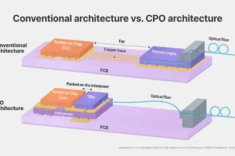
- DIGITIMES NVIDIA與SK海力士CPO不同？ 3D整合光學中心架構估落在2030後
anthropiccomputeasic
Anthropic也投入自研晶片 未來算力採購牽動ASIC業者訂單角力
Anthropic於2026年8月5日證實正組建內部矽晶片團隊，將為Claude模型設計客製晶片後，其人事動作頻頻，也讓外界認為這次Anthropic要自主開發晶片「絕非虛言」。
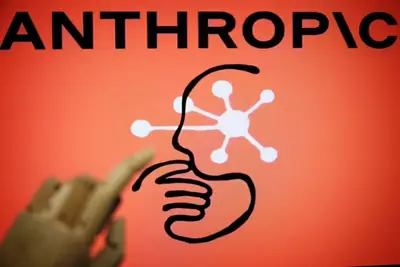
- DIGITIMES Anthropic也投入自研晶片 未來算力採購牽動ASIC業者訂單角力
foldxiaomisoc
小米18 Fold率先搭載玄戒O3 自研SoC強化裝置端AI
小米持續擴大自研晶片終端產品導入範圍。小米24日在玄戒晶片媒體記者會上公布產品導入規畫，旗下新一代頂級折疊旗艦手機小米18 Fold將首發搭載玄戒O3，預計9月推出；小米平板9 Pro Max也將同步採用玄戒O3。
- DIGITIMES 小米18 Fold率先搭載玄戒O3 自研SoC強化裝置端AI
fed
AI成關鍵議題 聯準會緊盯通膨、泡沫風險
人工智慧（AI）已成為官員討論經濟情勢時最常出現的關鍵字，據聯準會（Fed）最新一次政策會議紀錄，光是討論現況與展望的15個段落中，AI就被提及18次之多，範圍涵蓋通貨膨脹、就業與金融穩定。
- DIGITIMES AI成關鍵議題 聯準會緊盯通膨、泡沫風險
xringsocxiaomi
小米推Xring O3自研手機SoC 導入比重尚難威脅聯發科、高通
小米於8月24日的玄戒晶片技術溝通會上，正式發表新一代自研系統單晶片（SoC）「玄戒O3」（Xring O3），官方對此款產品仍定位為AI旗艦SoC。
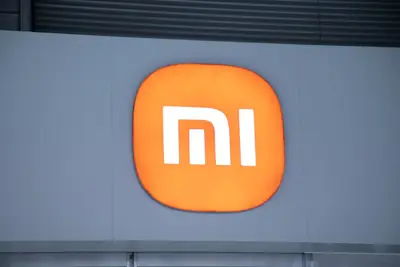
- DIGITIMES 小米推Xring O3自研手機SoC 導入比重尚難威脅聯發科、高通
poolsideopensourcefunding
NVIDIA重組Poolside盤算 抗衡中國開源、為晶片需求買保險
NVIDIA近期敲定重大協議，將以120億美元估值向人工智慧（AI）新創Poolside投資10億美元，並進一步支付60億美元取得技術授權、且聘用Poolside逾百名工程核心團隊，總計投入約70億美元。
- DIGITIMES NVIDIA重組Poolside盤算 抗衡中國開源、為晶片需求買保險
bytedance
IT早报 0825：2026 胡润中国品牌榜发布；成都减灾所就预警偏差致歉；小米明确二手手机等产品不属三包范围；小米玄戒 O3、O100、D100 三款自研芯片发布...
“IT早报”时间，大家好，现在是 2026 年 8 月 25 日星期二，今天的重要科技资讯有： 1. 2026 胡润中国品牌榜发布：苹果蝉联第一，抖音与微信并列，华为重返前十，AIGC 品牌首次入榜 胡润研究院发布《2026 胡润中国品牌榜》，苹果蝉联第一，AIGC 行业首次独立入榜，华为重返总榜前十，本文带来完整榜单信息。>> 查看详情 2. 首报震级 7.7 级，成都高新减灾研究所就宜宾长宁 4.7 级地震预警偏差致歉 成都高新减灾研究所 8 月 24 日发布致歉说明，对宜宾长宁 4.7 级地震的预警偏差表示歉意。首报震级为 7.7 级，偏差较大，系
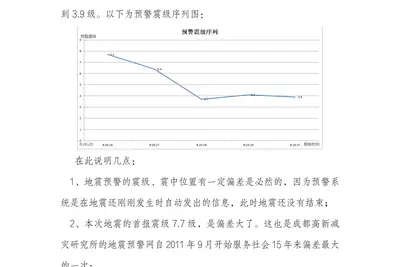
AI 幫忙「白話摘要」學術文時，多講的幾句話是真的還幻覺？
大型語言模型愈來愈常用於醫療、教育、新聞與日常搜尋，模型一旦出錯，影響也隨之放大。美國伊利諾大學厄巴納香檳分校 […]
- 科技新報 TechNews AI 幫忙「白話摘要」學術文時，多講的幾句話是真的還幻覺？
百億預算砸給生成式 AI，一文看懂華爾街六大巨頭的 AI 軍備競賽
華爾街大型銀行正將人工智慧視為新一輪競爭核心，從前線交易、後台作業到內部文化與人力配置皆被重新改寫。摩根大通、 […]
- 科技新報 TechNews 百億預算砸給生成式 AI，一文看懂華爾街六大巨頭的 AI 軍備競賽
regulation2025
研究团队调查发现超七成英语生物医学论文已使用 AI 辅助写作，呼吁业界建立完善监管机制
IT之家 8 月 25 日消息，据外媒 phys 报道，近期 Lena Holzwarth 带头的研究团队分析了来自 PubMed Central 平台的 119 万余篇英文生物医学论文，发现生成式 AI 正迅速融入学术论文写作。 研究人员通过分析论文中的“AI 高频用词”（例“delves”“exacerbating”和“invaluable”等）并建立数学模型估算论文中的 AI 使用比例， 其中 2025 年约 77% 的英语生物医学论文出现了 AI 辅助写作或编辑的明显特征 ，相比 2023 年的 19% 和 2024 年的 52% 大幅提升。 研
studiomac
苹果 AI 服务器内部结构首曝：M5 系列芯片、2U 机架，Mac Studio 负责软件控制
IT之家 8 月 25 日消息，消息源 @hsuchingpo 昨日（8 月 24 日）在 X 平台发布推文，分享了 4 张图片，展示了苹果自研 Apple Silicon AI 服务器内部布局， 采用定制 2U 机架，内部设有 4 列硬件，每列包含 8 个计算单元，整机或搭载 32 颗处理器。 消息源在配图说明中称：“苹果 M5 服务器”，在网友询问这是否为苹果 Private Cloud Compute（私有云计算）硬件时，表示“大概率是”。消息源还表示该服务器需要搭配 Mac Studio（起到软件控制的作用）使用。 从俯视图看，服务器采用定制的
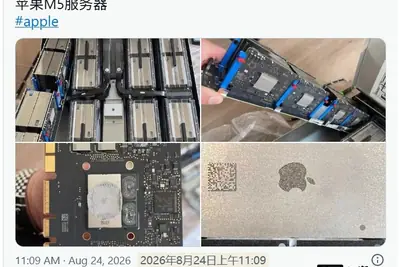
geminipixelintel
谷歌为 Pixel 11 系列手机测试 Gemini 驱动的“设备帮助”工具，可对话式排查手机故障
IT之家 8 月 25 日消息，谷歌目前正在为 Pixel 11 系列测试一项由 Gemini 驱动的“设备帮助”（Device help）功能。用户可以直接与 Gemini 对话，咨询手机使用过程中遇到的各种问题，并获得故障排查和操作指导。 “设备帮助”位于 Gemini 的“加号”菜单中，在列表底部，“个人智能”（Personal Intelligence）选项的上方。 不过，目前这项功能似乎仍处于小范围测试阶段，尚未向所有用户大规模推送。当然，即使谷歌正式开始大规模推送新功能，往往也需要很长时间才能覆盖所有用户，因此此次测试也可能意味着正式推广已经
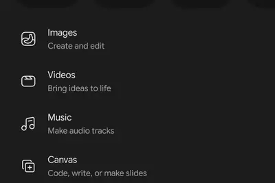
22999proamd
宏碁暗影骑士 · 龙 8 Pro 游戏本首销：9955HX3D + RTX5070 Ti，22999 元
IT之家 8 月 25 日消息，宏碁 (Acer) 旗下上架暗影骑士 · 龙 8 Pro 游戏笔记本电脑将于今天 10 点开启首销，当前上架配置提供 32GB DDR5 SO-DIMM 内存和 1TB SSD 存储，标价 22999 元（可在此基础上享受国家补贴）。 京东 宏碁暗影骑士 · 龙 8 Pro 游戏本 22999 元 直达链接 暗影骑士 · 龙 8 Pro 也就是全球市场的 Nitro 16 (AN16-A91)，搭载 AMD 锐龙 9 9955HX3D 处理器和 NVIDIA GeForce RTX 5070 Ti 笔记本电脑 GPU。 宏
hittingentry-leveljobs
AI is hitting entry-level jobs hardest, Stanford study finds
Young employment in AI-impacted fields down 19% compared to more AI-resistant occupations.
- Ars Technica AI AI is hitting entry-level jobs hardest, Stanford study finds
boughtspacexipo
Trump bought SpaceX shares two weeks after blockbuster IPO
The president bought when the stock was in the mid-$150 range. SpaceX finished trading on Monday back at its IPO price of $135.
disruptreplitamjad
Amjad Masad, CEO and co-founder of Replit, joins the Disrupt Stage at TechCrunch Disrupt 2026
At TechCrunch Disrupt 2026, Replit CEO Amjad Masad will share his perspective on the future of programming and Replit's role in developing it.
adoptionbusinessesmust
Businesses must reinvent their processes and workforce to scale agentic AI adoption
Only 15% of US-based organizations have reached scaled, orchestrated, multi-agent adoption, according to the latest Deloitte research.
labordealsday
The best early Labor Day deals to shop now: Save on TVs, Apple devices, and more
Labor Day is just around the corner, and there are already some great deals available at Amazon, Best Buy, Walmart, and more.
instinctassistantpowerful
Instinct’s powerful AI assistant is raising privacy and security concerns
Early testers are raving about what Instinct can do, but some say the AI assistant’s sweeping access, broad terms and ability to act on users’ behalf come with uncomfortable trade-offs.
blinkcamerasecurity
This Blink security camera can last up to 2 years on one charge - and it's on sale
The Blink Outdoor 2K+ security camera and Blink Battery Doorbell 2K+ are on sale in this bundle deal, but not for long.
fairphone649goldilocks
The $649 Fairphone 6+ is the Goldilocks of Android phones - and it's available in the US now
Fairphone is finally selling its latest model in the US. The $649 handset has 11 swappable parts, and a replacement battery is only $40.
metaowngames
I tried Meta's new free vibe coding app to make my own games, and it was surprisingly fun
You can now code your own mini games and 'gizmos' with no experience. Creating is just half the fun.
supermicroseniormanager
Nvidia senior manager linked to Supermicro scheme smuggling AI servers to China
Nvidia worker indicted after Jensen Huang scolded Supermicro for AI server smuggling.
self-drivingcarssomeday
Self-Driving Cars Could Someday Take Requests
This article is part of our exclusive IEEE Journal Watch series in partnership with IEEE Xplore. The idea of letting a machine do the driving for you may put a lot of people off autonomous vehicles . But research could make it possible to backseat-drive an autonomous vehicle just
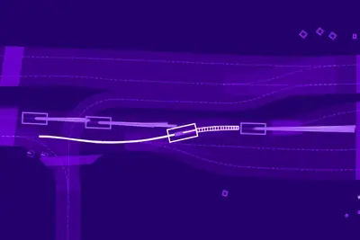
- IEEE Spectrum AI Self-Driving Cars Could Someday Take Requests
acemagicf2a358
ACEMAGIC 推出 F2A 迷你主机：酷睿 Ultra X7 358H 处理器、32GB 内存
IT之家 8 月 24 日消息，ACEMAGIC 现已推出新一代迷你主机 F2A，新品主打小巧机身，搭载英特尔 Panther Lake 平台。 IT之家注意到， 这款迷你主机采用英特尔酷睿 Ultra X7 358H 处理器 ，拥有 16 核心 16 线程，其 NPU 的 AI 算力最高可达 50 TOPS，配备 Arc B390 核显，整机 AI 性能最高可达 180 TOPS。 规格方面，该迷你主机尺寸为 128*128*37mm， 标配 32GB LPDDR5X 内存和 1TB NVMe 固态硬盘 。新机配备 HDMI 2.1、DP、USB4 T
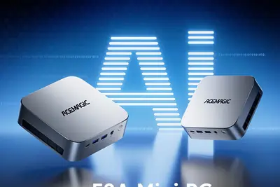
anthropicblind
直接问你要钱还是坚持使命，Anthropic 面试流程曝光
IT之家 8 月 24 日消息，据外媒 Axios 今日报道，熟悉 Anthropic 招聘流程的人士透露，这家前沿人工智能实验室会在招人时问一个相当直接的问题： 如果公司的使命与金钱发生冲突时 ， 你会如何选择 ？ 据报道，所有 Anthropic 求职者都需要参与一次文化面试，让公司评估应聘者的价值观。 一位匿名人士透露，他曾在面试环节被问到：“如果公司有一天为了安全放弃 AI 业务，导致股价归零，你有何感想？” 职场网站 Blind 的一个匿名回答是这么样的：“我那时候很诚实地说，如果股价真的跌到 0，我会不高兴…… 我希望努力创造最大社会价值、坚
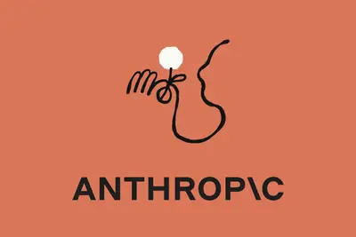
buildingagentsagent
OpenAI is building AI agents for everything. Will everyone use them?
Inside the frontier lab’s push to bring AI agents from software engineers to the masses.
reductionuntilnov
OpenAI: GPT 5.6 Sol price reduction (until at least Nov 21)
Article URL: https://developers.openai.com/api/docs/pricing Comments URL: https://news.ycombinator.com/item?id=49421074 Points: 279 # Comments: 256
- Hacker News (100+) OpenAI: GPT 5.6 Sol price reduction (until at least Nov 21)
firefoxdumpedfeatures
I dumped Firefox, but these 5 features finally won me back - here's why
It's been a bumpy road for Mozilla's browser, but as the dust of doubt settles, Firefox has once again become my default browser on all platforms.
pebbletimedowngrade
After years with an Apple Watch, a Pebble Time 2 'downgrade' was exactly what I needed
The Pebble Time 2 is a no-frills smartwatch that helps you disconnect from the digital world.
firepayamazon
Amazon hikes prices on Echos, Kindles, Fire TVs as much as 60% - here's what you'll pay now
Be prepared to pay more for an Echo Dot, 16 GB Kindle, Fire TV Stick HD, and Amazon eero 7 mesh router, among several other products.
encouragesmarterclassroom
How to encourage smarter AI use in the classroom
This article is from Making AI Work, MIT Technology Review’s limited-run newsletter examining how to apply LLMs across industries. To receive it in your inbox, sign up here. Chatbots took many schools by surprise upon their release a few years ago. Suddenly, students carried an a
- MIT Technology Review AI How to encourage smarter AI use in the classroom
卡迪夫大学新研究：AI 尚无法像人类教师一样可靠地批改作业
IT之家 8 月 24 日消息，据外媒 Phys.org 今天（24 日）报道，卡迪夫大学和墨尔本大学的一项新研究发现，生成式人工智能（GenAI）目前还无法像人类教师一样可靠地评判学生的书面作业。 研究人员使用 ChatGPT 的两个版本，对 50 篇生物科学专业本科生论文进行评分，以测试大模型评估学生作业的能力。ChatGPT 需要 按照 7 项标准 批改这些论文，研究人员还采用了 4 种不同的提示方式，随后将大模型与人工评分的平均分和分数波动情况进行比较。 图源：Pexels 卡迪夫大学生物科学学院威廉 · 凯博士指出：“研究结果显示，模型给出的分
takesadaptableengineer
What It Takes to Be an Adaptable Engineer
The AI boom has disrupted the way engineers work, introducing new tools to learn, raising expectations for what teams can achieve in a workday, and making it harder to get hired in the first place. This makes it difficult to advise students on which specific coding languages or t
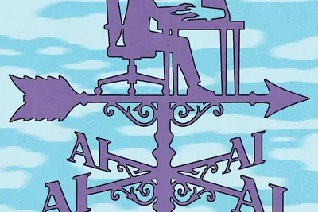
- IEEE Spectrum AI What It Takes to Be an Adaptable Engineer